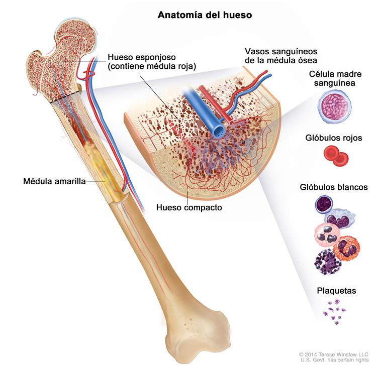

LEUCEMIA LINFOBLÁSTICA AGUDA INFANTIL
La leucemia linfoblástica aguda infantil (también llamada LLA o leucemia linfocítica aguda) es un cáncer de la sangre y la médula ósea. Por lo general, este tipo de cáncer empeora de forma rápida si no se trata.
Anatomía del hueso
El hueso se compone de hueso compacto, hueso esponjoso y médula ósea. El hueso compacto forma la capa exterior del hueso. El hueso esponjoso se encuentra, más que todo, a los extremos de los huesos y contiene médula roja. La médula ósea se encuentra en el centro de la mayoría de los huesos y tiene muchos vasos sanguíneos. Hay dos tipos de médula ósea: roja y amarilla. La médula roja contiene células madre sanguíneas que se pueden convertir en glóbulos rojos, glóbulos blancos o plaquetas. La médula amarilla está compuesta, en mayor parte, de grasa.